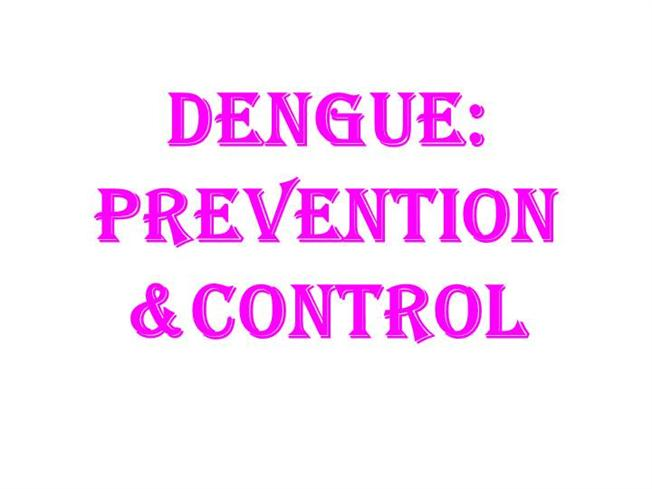

|

Anti-dengue actions are done by the public health department all over the year to ensure that people are safe from dengue.Free medication is given to people who have affected by dengue.Mosquito nets are provided to people to be safe from dengue,During rainy season blankets are provided. |